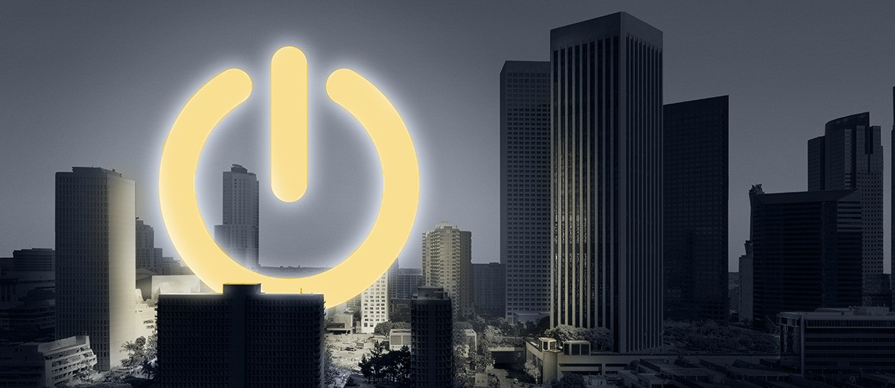

Map The Live Workflow
Trace the path from battery alert to closed case, including service, quality, R&D, and partner handoffs for active ESS deployments.
Anne, your team sells and deploys large ESS projects. Service speed becomes part of the product once those systems go live with utilities and global partners.
You are hiring an after-sales engineer to build the Europe-Africa service system. That usually means field demand is moving faster than the current handoff between alerts, service cases, and partner teams.
The role tells us Gotion is scaling ESS support across Europe and Africa. That creates pressure between remote monitoring, field dispatch, warranty decisions, and partner follow-up. If those handoffs stay manual, response times slip and root-cause learning slows. On utility-scale projects, that hurts partner trust and deployment margin.
A scoped end-to-end pilot, delivered with Gotion's product and service owners.
Eight weeks, with weekly demos and one live workflow at the end.
The goal is simple: one cleaner service flow for ESS projects in Europe and Africa, without waiting for a full platform rebuild.
Trace the path from battery alert to closed case, including service, quality, R&D, and partner handoffs for active ESS deployments.
Join monitoring signals, work orders, SLA clocks, complaint notes, and field updates in one operating path for Europe-Africa teams.
Set role-based access, audit trails, and clean exports so Gotion teams and global partners work from the same facts.
Launch one production-ready path with weekly demos, live data checks, and support metrics the ESS team can use fast.
It matches Gotion's real moment: large ESS deployments, new service standards, and a monitoring platform that already carries fault, work-order, and access logic.
Elinext is a full-cycle software development company, working since 1997 with about 700 in-house specialists and no freelancers. For industrial and platform work, that matters because we cover web, backend, QA, DevOps, and integrations in one team. We work under ISO 27001 and ISO 9001. Our delivery history includes Siemens, Volkswagen, Broadcom, and TRUMPF. For Gotion, that means one team can build the service workflow, harden it, and support rollout without extra vendor layers.

Elinext built a platform that pulls live machine data and turns it into OEE improvement insight for factory teams.

Elinext improved a monitoring app with access management and better large-data performance, then helped drive stronger daily use.
If this is timely, we can scope the first workflow fast.
Contact ElinextPrepared for Anne Torricelli at Gotion Inc. on 2026-04-23.